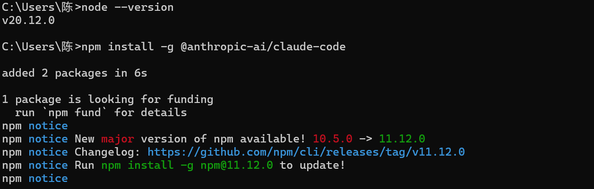
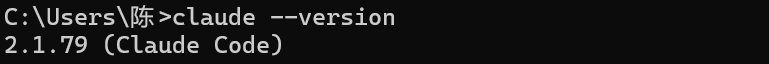

Claude安装使用教程
前置条件
部署Claude你需要：
1.科学上网(国内暂不支持)
2.国外手机号(用于登录Claude)
Claude Code的三种使用方式
Web端：无需安装，但功能相对有限，适合完全新手
CLI：功能完整集成度高，适合有一定基础的的开发者
编辑器集成：依赖插件和环境配置，适合日常开发
Claude Code CLI安装步骤
注册Claude账号:前置条件中提到的两条准备好后，在官网注册账号
官方脚本安装
- Windows CMD
curl -fsSL https://claude.ai/install.cmd -o install.cmd && install.cmd && del install.cmd - Windows PowerShell
irm https://claude.ai/install.ps1 | iex - macOS, Linux, WSL
curl -fsSL https://claude.ai/install.sh | bash
npm安装
如果你的电脑安装了Node.js，可以使用npm安装
命令行输入
node --version，若显示版本号说明安装成功
npm安装claude：npm install -g @anthropic-ai/claude-code。

验证
使用上述其中一种方式安装成功后验证一下
命令行输入
claude --version，若显示版本号说明安装成功。

可能遇到的问题
若运行claude显示如下，则代表环境依赖配置有问题
Claude Code on Windows requires git-bash (https://git-scm.com/downloads/win). If installed but not in PATH, set environment variable pointing to your bash.exe, similar to: CLAUDE_CODE_GIT_BASH_PATH=C:\Program Files\Git\bin\bash.exe
Claude Code 的底层运行环境依赖类 Unix shell，因此需要 Git Bash 提供 Bash 解释器
- 如果你的电脑上没有安装Git Bash，请先在官网安装
- 如果已经安装过Git Bash，请检查是否添加环境变量 PATH
命令行输入
bash --version
若显示版本号说明正常
若提示 “bash 不是内部或外部命令”，需要手动添加路径
首先需要明确你的Git Bash安装在什么位置，一般通常位于“C:\Program Files\Git\bin\bash.exe”，但笔者安装在了D盘其他位置，如果你也安装在了其他位置，添加环境变量时请注意改为自己真实的位置。
方法一：在控制面板中打开环境变量，新建变量
变量名称：CLAUDE_CODE_GIT_BASH_PATH
变量值：C:\Program Files\Git\bin\bash.exe
方法二：也可以使用命令行设置环境变量
setx CLAUDE_CODE_GIT_BASH_PATH "C:\Program Files\Git\bin\bash.exe"
启动Claude
命令行输入
claude